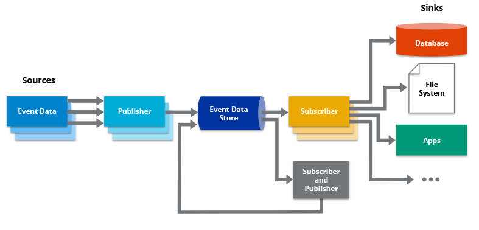

Event driven architecture
This post distills key insights from my study of "Event Driven Architecture - The Complete Guide" by Demi Lavi.
What is Event-Driven Architecture?
Event-Driven Architecture (EDA) is a design paradigm structured around the production, detection, consumption, and reaction to events. An event is any significant change in state that should trigger further processing. This architecture style is highly dynamic, enabling applications to be more responsive and scalable. It is particularly well-suited for environments where asynchronous data flows and real-time updates are critical, such as in microservices, real-time analytics, and complex event processing systems.
Why Use Event-Driven Architecture?
- Scalability: EDA can handle high volumes of events without a single point of failure, making it scalable to demand.
- Flexibility: Services in EDA can be developed, deployed, and scaled independently, which enhances the flexibility of development teams to address changes quickly.
- Responsiveness: Since components communicate through events, the system can respond immediately to real-time data changes.
- Asynchronous Communication: Components in an EDA do not wait for responses to proceed with processing, reducing system downtime and bottlenecks.
- Evolved from microservices architecture frameworks.
- Highly popular and widely adopted.
Core Components of Event-Driven Architecture
- Event Producers: Generate and send events to the central messaging system. Producers are often microservices or external systems that detect state changes.
- Event Channels: Act as the pipeline through which events are delivered from producers to consumers. They ensure that events are distributed efficiently and securely.
- Event Consumers: Receive events and perform the appropriate actions based on the event type and payload. Consumers are typically services or microservices that handle specific business logic.
Advantages of Event-Driven Architecture
Event-Driven Architecture offers several advantages over traditional request/response architecture, making it ideal for certain types of applications:
- Improves decoupling of processes and services, enhancing system flexibility and maintainability.
- Supports better scalability as components can be scaled independently based on demand.
- Enhances real-time performance capabilities, crucial for applications requiring immediate data processing.
Challenges of Event-Driven Architecture
While EDA provides numerous benefits, it also presents unique challenges:
- Complexity in Error Handling: The asynchronous nature of EDA can make it difficult to trace and handle errors as events flow through multiple components.
- Testing Difficulties: Testing an event-driven system can be more complex than traditional architectures due to its asynchronous and distributed nature.
- Management Overhead: Managing a large number of services and the flow of events can become cumbersome without proper tools and practices.
Introduction to Events
Events have evolved from traditional architectures and are fundamentally based on the principles of microservices architecture.
Microservices Architecture
- Each service operates within its own process.
- Utilizes lightweight communication protocols.
- Supports polyglot persistence (no platform dependencies between services) and development in different programming languages.
- Serves as a modern replacement for two legacy architectures:
- - Monolithic Architecture: Challenging to scale, all components reside in the same process, platform limitations.
- - Service-Oriented Architecture (SOA): Views applications as separate but interconnected services, typically each service interacts through a singular API.
One of the most critical aspects of microservices architecture is communication, which significantly impacts performance, scalability, implementation, and more.
Event-driven architecture focuses on the communication between services rather than on the services themselves.
Command and Query
- Commands: A service requests another service to perform an action. Often synchronous with occasional responses.
- Queries: A service requests data from another service. Always expects a response, even if there is no data.
Challenges with Command and Query
- Performance: Methods are typically synchronous.
- Coupling: Services must be aware of the handler's identity. API changes in the service require corresponding changes in the calling service.
- Scalability: Tightly coupled to a single instance of a service. Scaling involves complex load balancing and configurations.
Solving These Issues with Events
- An event notifies the system that something has happened.
- Events do not expect a response.
- Asynchronous in nature.
- The service issuing the command does not know the event handler.
Event Driven Architecture (EDA)
Utilizes events as the primary form of communication between services, consisting of three main components:
- Producer: The service/component that issues the event.
- Channel: Distributes the event to relevant parties and is crucial for managing event queues.
- Consumer: Receives and processes the event.
Advantages of EDA
- Improved performance: The channel does not wait for a consumer's response.
- Reduced coupling: Producers send events without knowing who will listen.
- Enhanced scalability: Multiple consumers can listen to the channel, and it's easy to add more as needed.
Publish/Subscribe (Pub/Sub)
Similar to EDA but used specifically for message patterns within systems. The main difference is that while EDA can encompass a variety of communication types (including REST API calls), Pub/Sub strictly deals with message exchanges.
Logging and Monitoring in EDA
Implementing effective logging and monitoring in a distributed, event-driven system is challenging due to the decentralized and asynchronous nature of EDA.
- Using correlation IDs to trace event paths across services.
- Centralized logging engines to unify log formats and manage data from multiple sources.
Advanced Topics in EDA
Covers less common but critical scenarios, such as mixing EDA with synchronous API calls, handling stateful versus stateless event processing, and utilizing event streaming technologies like Kafka for managing large-scale event data.